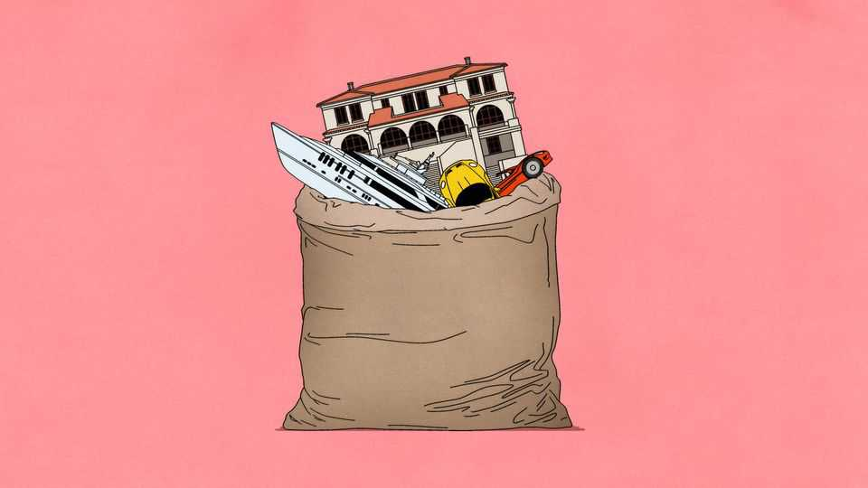

The return of the snatch-and-grab state
A new history of confiscation sheds light on modern economic warfare

Nov 12th 2026
AS A QUAKER, A. Mitchell Palmer did not relish conflict. In 1913 the American congressman turned down an offer to serve as secretary of war. But conflict in Europe challenged his pacifism. Six months after America joined the fight against Germany and Austria-Hungary in 1917, Palmer was appointed Alien Property Custodian. The job put him at the forefront of the economic battle against the two aggressors. Tasked with seizing enemy-owned assets across the American economy, his office hoovered up factories, stocks, buildings, patents and more. Soon it began auctioning these to raise money for the war effort. By 1918 Palmer was helping to finance the fighting with the enemies’ own wealth. Germany began the war as the world’s third-biggest foreign investor, after Britain and France. By the time the guns fell silent, more than half of its foreign assets had been confiscated.
The story of Germany’s expropriation is an important episode in “The Age of Confiscation”, an insightful new book by Nicholas Mulder of Cornell University. Armies have often financed themselves by looting their enemies. But because so many German-owned assets were located in Allied jurisdictions, many of them could be taken with little more than a pen stroke. As Mr Mulder writes, Germany was the first country in the 20th century to have its assets expropriated on every continent.
Today the West’s enemy is Russia. After its full-scale invasion of Ukraine in February 2022, Western governments moved quickly. By 2023 they had blocked some $60bn in Russian oligarchs’ assets, from villas in Saint-Tropez to yachts in the Caribbean, and frozen some $300bn-worth of Russian central-bank reserves held in the West (mostly at Euroclear, a Belgian depository).
Yet Western leaders have remained divided over what to do with these assets. Some of the bling and boats were auctioned and in 2024 Ukraine’s allies agreed to use the interest earnings on Russia’s reserves to extend a $50bn loan to Ukraine. But Belgium complained that confiscation of the Euroclear reserves could leave it liable for damages equal to a third of its GDP. Others worried about the risk to Europe’s reputation as a bastion of strong property rights, which could make the continent less attractive as an investment destination. Christine Lagarde, the head of the European Central Bank, warned that seizing Russia’s assets would “start breaking the international legal order”.
As Mr Mulder explains, such debates have a long history. For centuries governments’ confiscatory capabilities developed hand-in-hand with property rights. Once states grew strong enough to protect claims to property, they also took powers to abrogate them. When Hugo Grotius, a 17th-century Dutch jurist, argued that all societies were formed to protect property rights, he was careful to create an exception. Sovereign rulers, he wrote, maintain the right of “eminent domain”, allowing them to seize private property for the public good. The idea caught on. Grotius’s theory was adopted by the Founding Fathers in America and by Napoleon in post-revolutionary France.
Because property rights tend to support economic growth, observers have often understated the role of confiscation in the history of rich, prosperous states. In 1989 Douglass North and Barry Weingast, two economic historians, argued that Britain’s Glorious Revolution of 1688 brought on “the elimination of confiscatory government”. That was an oversimplification. The power of confiscation moved from the monarchy to Parliament, but the state wielded it to redistribute land, raise money for wars and the like. Some 83% of constitutions adopted between 1850 and 2008 enshrine the right to expropriate property for the public good.
Things get especially messy in times of war. In America Palmer seized not just factories and businesses from rich Germans in New York, but also the possessions of poor immigrants. Thousands of American women who had married German and Austro-Hungarian men also lost their property. Britain pursued a similar campaign against enemy-owned businesses across the empire. But it also forced British investors to sell the British state American securities, which it needed as collateral for loans from America. It bought them supposedly at market prices but paid the investors in sovereign bonds rather than cash.
Confiscation is also contagious. Europe’s embrace of it during both world wars was carefully studied by the leaders of the continent’s former colonies. During the 1950s a wave of nationalisations spread across the Middle East and Asia. In 1956 Gamal Abdel Nasser, Egypt’s president, snatched the Suez Canal from the British and French. Law 285, which initiated that seminal expropriation, was modelled on the Trading with the Enemy Acts that Britain and America had used during the first world war.
The contagion is spreading again. The Kremlin responded to the seizure of Russian assets by taking over Western firms’ concerns in Russia and distributing them among Vladimir Putin’s cronies. Four years into the war the country has more billionaires than it did in 2022 (even if it is harder for them to flaunt their wealth in Mayfair or on Avenue Montaigne). Autocracies, including post-colonial ones, are also catching the bug: in recent years juntas in the Sahel have seized Western-owned gold and uranium mines. America is not immune, either. This year Donald Trump, who called eminent domain “an absolute necessity” during his first presidential run in 2016, has ordered the capture of Venezuelan oil tankers and threatened to seize the Panama Canal and Greenland.
The brief spell of globalisation and peace around the turn of the millennium, when foreign assets ballooned and seizures all but stopped, was a historical anomaly, Mr Mulder thinks. It also left the world replete with property there for the taking.■